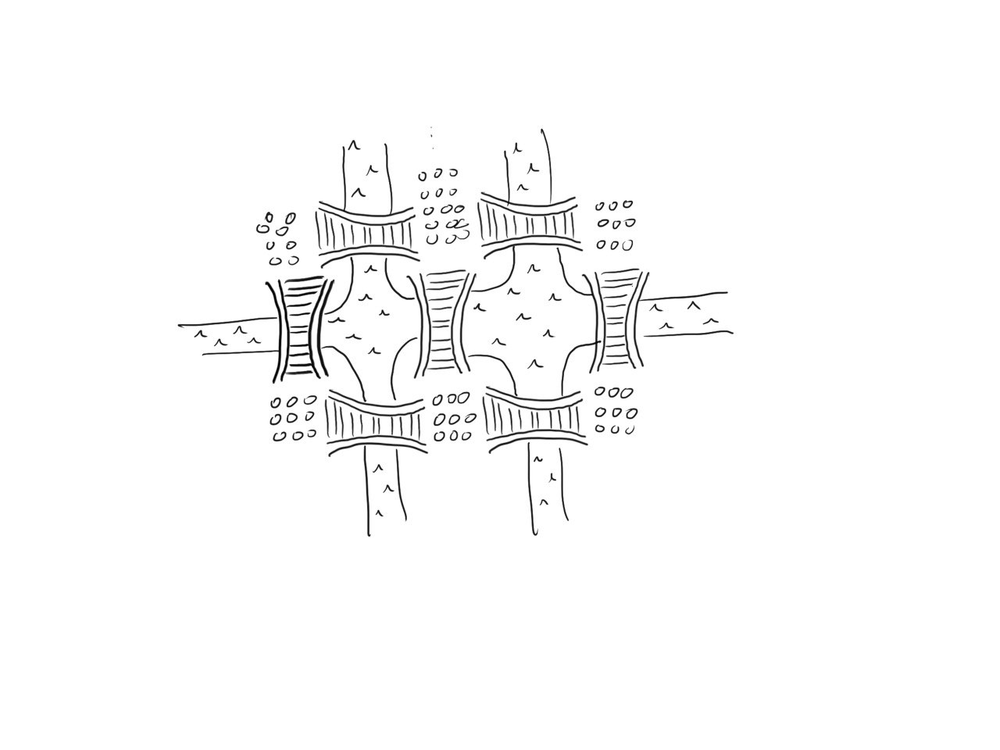
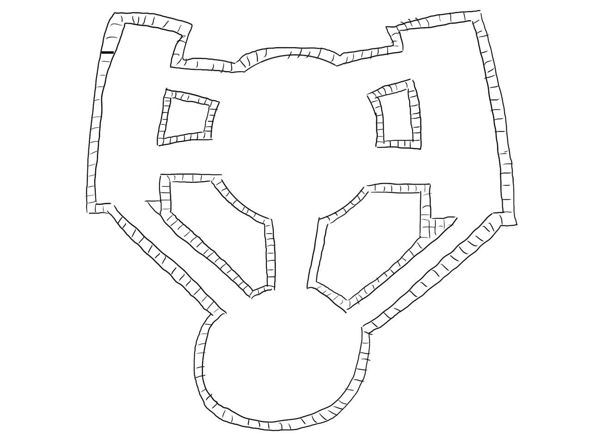

Una avventura in Flatlandia
27 marzo 2022
Questo è un racconto-attività (o meglio, una mathiaba ) che ho scritto che guida a verso la caratterizzazione dei grafi Euleriani. L'attivitò è pensata per essere svolta in una classe di scuola superiore, ma può essere adattata a qualsiasi livello. Se volete usarla, sentitevi liberi di contattarmi per qualsiasi domanda o dubbio.
Il file pdf di questa mathiaba si trova qui: Flatlandia.pdf
1 — Le Terre Instabili
La prima abitante di Flatlandia ad entrare in contatto con Spacelandia fu la Professoressa Quadrato. In particolare incontrò la signora Sfera mentre questa stava passando attraverso il foglio in cui abitava Quadrato. Chiaramente Quadrato non vide una sfera, in quanto come essere bidimensionale non può vedere oggetti tridimensionali, ma bensì vide un cerchio. Al inizio non credette alla Sfera quando questa gli disse che veniva da Spacelandia. Poi la sfera cominciò a muoversi attraverso il foglio e Quadrato vide che il cerchio si stringeva fino a sparire. Così, comincio a comprende l'esistenza della terza dimensione e a credere la Sfera che gli svelò i segreti di Spacelandia.
Per farla breve, il mondo non era pronto per le scoperte di Quadrato. Quando questi torno in città con la sua scoperta venne etichettata come eretica e buttata in cella. Nessuno gli credde, a parte Rombo, un suo lontano nipote che nutriva molta ammirazione nei suoi confronti. Quadratò gli disse: « la Sfera si trova nel Regno Instabile, se la trovi e la convinci a mostrarsi in città, dovranno per forza liberarmi ». E è così che con Rombo vi siete imbarcati in un'avventura con le Terre Instabili.
2 — Le frontiere del Regno
Rombo scoprì molto presto il motivo del nome del Regno Instabile: Una volta che percorri un tratto di strada, questo si sgretola sotto i tuoi piedi e non puoi più ripercorrerla. Rombo arriva ai seguenti ponti, ma non sapendo se Sfera si trovi su uno di questi si rende conto di dovrerli percorrere tutti e sette.
È possibile trovare un tragitto che, partendo da una qualunque zona, consenta di attraversare ciascun ponte una ed una sola volta?

2.1 — Rombo si prepara per il futuro
Rombo si rende conto che potrebbe incontrare molti problemi del genere più avanti, e vuole quindi riuscire a studiare meglio il problema. Si pone le seguenti domande:
- Come posso provare a ripensare al problema mantenendo solo i dati “essenziali” ed eliminando tutto quello che c'è di “superfluo”? Ad esempio, è importante la lunghezza dei ponti? L'estensione delle isole? E in che modo si potrebbero rappresentare queste isole e questi ponti?
- Posso riscrivere il problema precedenti utilizzando solo: punti (che chiameremo vertici) e linee congiungenti i punti (che chiameremo spigoli)? Aiutatevi con un disegno.
- Posso, quindi, scrivere una definizione degli “oggetti” geometrici che ho disegnato e che d'ora in poi chiameremo GRAFI?
3 — Il Tempio Abbandonato
Il viaggio del Rombo quindi continuò, certo, non era un viaggio facile. Chiaramente non poteva mai fare una pausa, altrimenti sarebbe caduto nell'oblio. Dopo vario tempo arrivò finalmente a un Tempio, chiaramente abbandonato; sarebbe sicuramente stato difficile viverci se il pavimento ti crollava sotto i piedi. Di nuovo, Rombo vuole cercare di esplorare tutto il tempio senza mai passare due volte per lo stesso corridoio: è possibile trovare un tragitto che, partendo da una qualunque zona del tempio, consenta di attraversare ogni corridoio una ed una sola volta e tornare al punto di partenza? Se secondo voi esiste, disegnatelo; altrimenti spiegate perché non ci può essere. E cosa si può dire senza la condizione di tornare al punto di partenza?

Dopo un giorno di tempo Rombo capì che non può esserci un cammino che tornava al punto di partenza e che doveva arrendersi a esplorare solo una parte del Tempio. Ma in ogni caso non era totalmente insoddisfatto: il Tempio gli ha fatto capire che non è sempre possibile costruire un tragitto di quel tipo. Allora si chiese:
- Provate ora a disegnare un grafo con 5 vertici in modo che sia possibile percorrerlo tutto senza mai staccare la matita dal foglio e senza mai ripassare dai tratti già percorsi, partendo da un qualunque punto e tornando infine allo stesso punto.
- Disegnate ora un grafo con 5 vertici in modo che, ancora una volta, sia possibile percorrerlo tutto senza mai staccare la matita dal foglio e senza mai ripassare dai tratti già percorsi MA finendo il percorso in un punto diverso da quello di partenza.
- Disegnate un grafo con 5 vertici in modo tale che NON sia possibile percorrerlo tutto senza mai staccare la matita dal foglio e senza mai ripassare dai tratti già percorsi.
- Quali sono le principali differenze tra i tre grafi disegnati?
4 — L'Entroterra
Rombo si stava rendendo conto che più andava avanti più il regno instabile diventava astratto. Gli alberi perdevano le foglie: non perché stesse venendo l'inverno, ma perché gli alberi andavano a ridursi piano piano alla loro essenziale forma geometrica. Le strade persero i ciottoli e diventarono delle linee. Le montagne diventarono dei grandi triangoli. Nonostante ciò fosse strano, Rombo si sentiva ottimista, prendendo questo cambiamento come un segno che si stesse effettivamente avvicinando alla Sfera.
Tempio della Sfera: quali sono le condizioni necessarie e sufficienti perché ci sia un cammino euleriano?
“Ah sì, simpatici, questi abitanti del regno instabile. Sai che un Matematico li aveva già incontrati? Sì, quei percorsi che tu hai scomodamente chiamato ‘percorsi che puoi fare senza staccare la penna dal foglio’ si chiamano, dopo di lui: Percorsi Euleriani.”
— Sfera